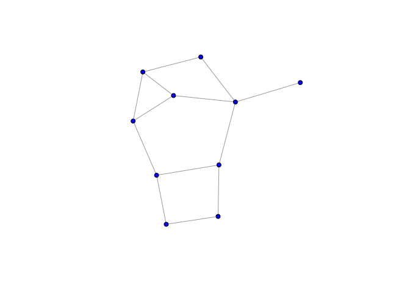
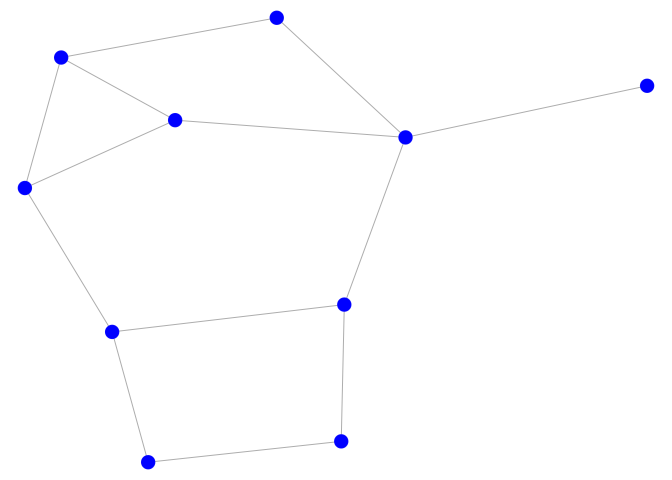
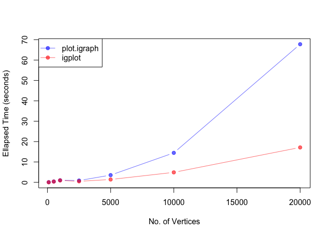

The igplot package offers a simplified version of the plot.igraph that creates network plots from igraph objects. The main function provided by the package is, unsurprisingly, igplot::igplot which is a wrapper around the base::plot function.
Basic Usage
The package is designed to plot igraph objects faster than the igraph::plot.igraph function. This means that less options are available. However, for moderate to large graphs, the igplot function should be faster than the plot.igraph function.
The basic usage of the package is described below:
Instead of using the plot method for igraph objects,
library(igplot)
# make graph
set.seed(123)
g = igraph::erdos.renyi.game(10, .35)
# make plot with igraph package
set.seed(42)
plot(
g,
layout = igraph::layout_with_fr,
vertex.color = "blue",
vertex.label = NA,
vertex.size = 5
)
you can use the igplot function, where plotting options are specified as a list with the plot_opts option.
# make same plot with igplot
set.seed(42)
igplot(
g,
layout = "layout_with_fr",
plot_opts = list(
v_cex = 2,
e_lwd = .8
)
)
The available plotting options can be found by typing ?igplot::igplot.
Speed comaprison
Here’s a short speed comparison between these two functions run on MacOS with a 2.4 GHz 8-Core Intel Core i9 processor:
compare_plot = function(n) {
g = igraph::erdos.renyi.game(n, .01)
set.seed(111)
tictoc::tic()
pdf("tmp.pdf", width = 5, height = 5)
plot(g, layout = igraph::layout_with_fr)
dev.off()
x = tictoc::toc(quiet = TRUE)
set.seed(111)
tictoc::tic()
igplot(g, layout = "layout_with_fr", outfile = "tmp.pdf", width = 5, height = 5)
y = tictoc::toc(quiet = TRUE)
return(c(igraph = x$toc - x$tic, igplot = y$toc - y$tic))
}
# create plots of different sizes
gsize = c(100, 500, 1000, 2500, 5000, 10000, 20000)
res = sapply(gsize, compare_plot)
# colors
cols = c(scales::alpha("blue", .6), scales::alpha("red", .6))
# create graph
par(mfrow = c(1, 1))
plot(gsize, type = "n", xlim = c(min(gsize), max(gsize)), ylim = c(0, max(res)),
xlab = "No. of Vertices", ylab = "Ellapsed Time (seconds)")
points(gsize, res[1, ], pch = 19, col = cols[1], type = "b")
points(gsize, res[2, ], pch = 19, col = cols[2], type = "b")
legend("topleft", c("plot.igraph", "igplot"), lty = 1, col = cols, pch = 19)
Other Functionalities
The igplot package provides also some functions to rotate graphs in order to make them comparable and functions to plot subsets of the vertices. See vignette by typing vignette("igplot") into the R console for more examples.